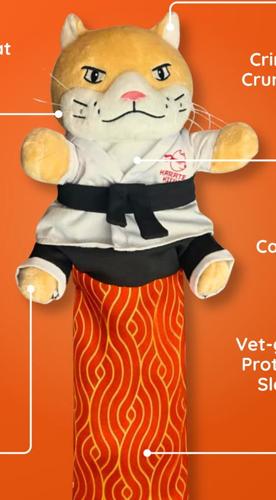
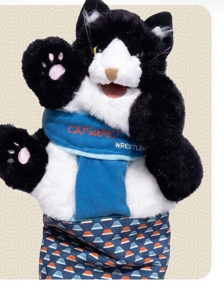
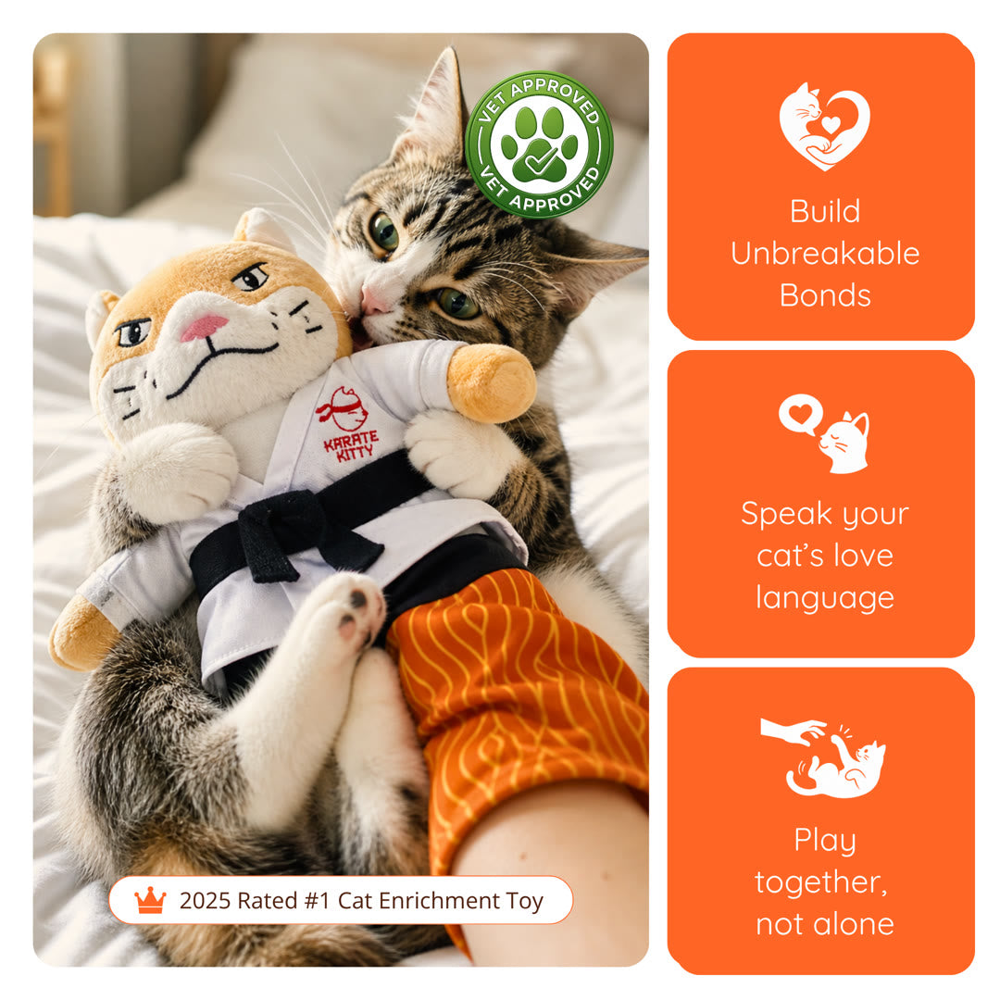
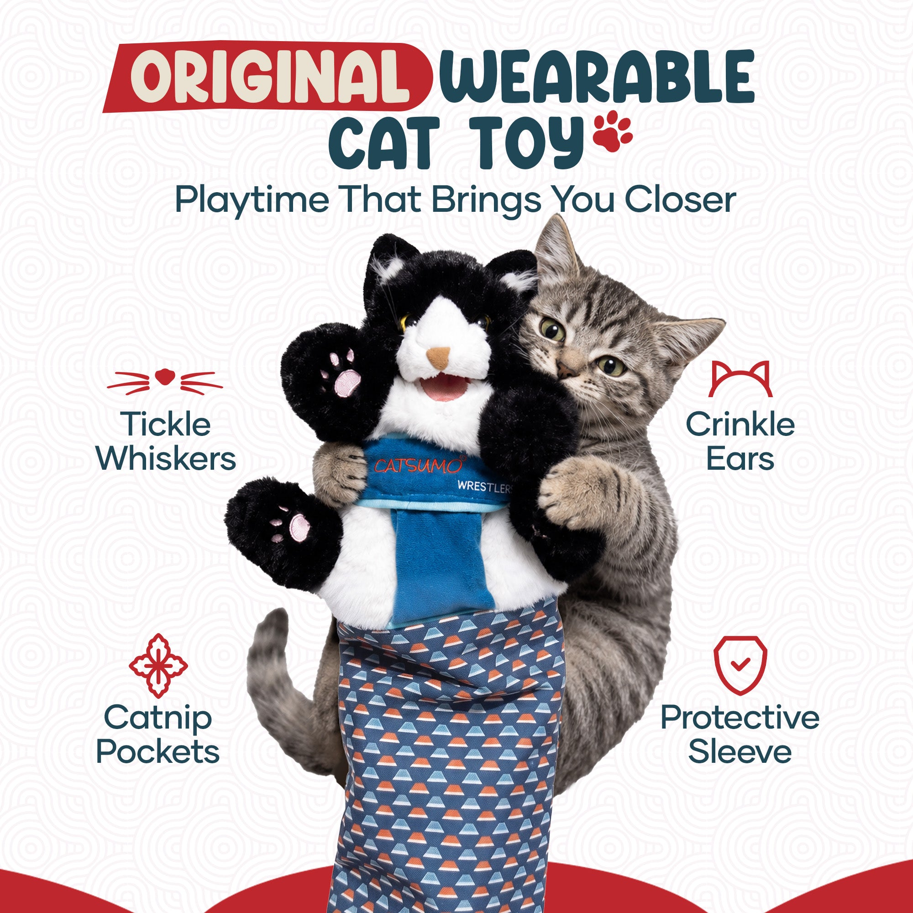

Это Stage 2 (сорсинг) департамента Product Intelligence. Stage 1 (анализ) — отдельно, его выжимка в Брифе. Внутри сорсинга — свои Этапы 0–3. Цель: товар НЕ ХУЖЕ Karate Kitty / CATSUMO (равный-хороший / другой / лучше) для теста — реальный товар под дропшип-агента.
departments/product-intelligence/sourcing/workflow.md + operational-memory/learnings.md. Лаб = рабочие отчёты/данные. Все цифры/спеки — реальные с листинга или «не найдено», не выдумываем.| Фото | Что показывает | Зачем | Статус |
|---|---|---|---|
 |
№1 · KK фронт (мой кроп) — рыжая морда, кимоно, пояс, оранжевый рукав | чистая форма arm-puppet; главный якорь | ✓ берём |
 |
№2 · CATSUMO фронт (мой кроп) — «смокинг», синий шарф, синий рукав | другой бренд/цвет → ловит весь КЛАСС | ✓ берём |
 |
№3 · KK hero (с сайта, целиком, не обрезано) — котик обнимает перчатку | «живой» полный кадр — другой сигнал для Alibaba | ✓ берём |
 |
№4 · CATSUMO hero (с сайта, целиком, не обрезано) — котик + 4 подписи фич | «живой» полный кадр — другой сигнал для Alibaba | ✓ берём |
Google → компании-КОНКУРЕНТЫ + Amazon + цены (→ в Stage 1, не переписываем). Yandex → смежные категории/насмотренность. Ссылки рабочие (фото публичны).
| Фото | Google Lens | Yandex | Находки |
|---|---|---|---|
| №1 KK фронт | открыть | открыть | заполнить |
| №2 CATSUMO фронт | открыть | открыть | заполнить |
| №3 KK hero | открыть | открыть | заполнить |
| №4 CATSUMO hero | открыть | открыть | заполнить |
(а) 6 ключевых × 10 стр — быстрый requests-direct, 6 запросов полные (wrestling glove 272 · wrestling puppet 282 · hand puppet 322 · kicker 391 · interactive 381 · teaser 326). (б) поиск по 4 фото — браузер+прокси, 48 товаров/фото (kk-front/catsumo-front/kk-hero/catsumo-hero). Слито → карта-чекбоксы (2013) в Этапе 2.
Те же шаги (движки aliexpress_harvest.py / aliexpress_image_search.py готовы).
Те же шаги.
Фабричные цены под финалистов + вопрос про премиум-упаковку.
Из собранного — широкий 1-й отбор галочками на карте (по ФОТО) → наша таблица отобранного. Alibaba ПОЛНОСТЬЮ: 6 ключевых запросов (×10 стр) + поиск по 4 фото = 2013 уник. товара (📷 = найдено по фото). Быстрый requests-direct + браузерный image-search.
🔑 Классификация H1–H6 — по названию (черновая группировка), НЕ по фото. Реальный отбор — твой, визуальный, по карте (картинка первична). Авто-теги только чтобы сгруппировать; ничего не выброшено.
📋 таблицаОтобранное H1 + 2-я игрушка (твой отбор + мои добавления) — 31Конкуренты из Google-выдачи (0.2) → отдаём в анализ Stage 1 (не переписываем его).
| Конкурент / находка | Где | Цена | Пометка |
|---|---|---|---|
| Karate Kitty (якорь) | DTC | $39.99 | платный лидер |
| CATSUMO (якорь) | DTC | $49.99 | соц-лидер, «оригинал» |
| дозаполнить из Google-выдачи (0.2) | |||
Сливаем таблицы H1–H6 всех площадок в ОДНУ → один товар виден по всем площадкам (цена/MOQ/надёжность). Выбираем основной + резервный + 2-ю игрушку → клик-сверка реальных цифр ТОЛЬКО у финалистов + вопрос про премиум-упаковку → чистый product-reality.md в dossier.